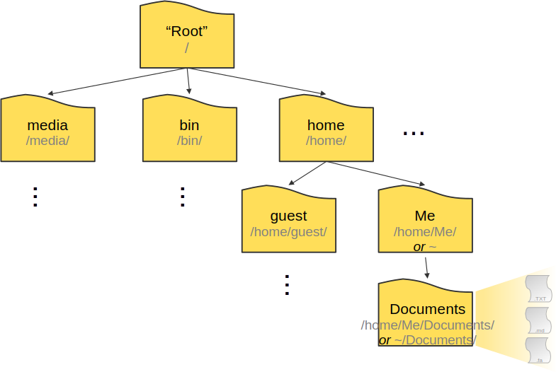

7 Part 1. Your first Unix commands - Navigating the Unix File-System Structure
What will be cover:
- The Unix file-system structure and how to navigate
- Some general rules
- Relative vs absolute path
- Running some basic commands and general syntax
Unix systems, like most operating systems, store file locations in a hierarchical structure. In the UNIX file-system each file and directory has its own “address”, and that address is called a “path”.
There are two special locations in all Unix-based systems That you should be familiar. The “root” location is where the address system of the computer starts. The “home” location is where the current user’s location starts.
By default every time you open a new terminal you start in your own “home” directory(containing files and directories that only you can modify). The path of home directory is usually represented by the “~” character.

Basic commands we will use
| Command | Description |
|---|---|
pwd |
print working directory |
ls |
list items in directory |
cd |
change directory |
cd .. |
go one level up |
ls -l |
long format listing |
ls -lh |
human readable sizes |
7.1 Finding out where you are
The pwd command in Linux is short for print working directory. It’s only function is to print the absolute path of the current directory. It’s handy when you’re not exactly sure what directory you’re in. So make it a good habit to get used to running the pwd command a lot.
# Example. Try running pwd. What do you see?
pwd
# What do you see if you run PWD instead?
PWD
# Try now to run this "echo $PWD". The command echo just prints the parameters we give it. The $PWD is a environment variable and we will discuss about their use a bit later on.
echo $PWD7.2 The command ls
ls is short for list, and is used to list the files and sub-directories in your present working directory or some other directory if you specify one.
# Examples
# List the files and directories in your current directory
ls
# or
ls .
# ls can accept several options. Try running the following commands and observe how their output differs from the previous one.
ls -l
# or
ls -lh
# You can use ls to list the contents of any directory. Try the following.
ls -l /etc I. The anatomy of a command (or command syntax)
Each command is usually composed of three parts:
The command itself
The options: These are optional parameters that can be used to customise the behavior of a command. (e.g. on the previous examples
ls -lshows the list of files in a long format)The arguments: specify the target of the command. (e.g. on the previous example
ls -l /etcyou instructed the command to list the contents of the /etc directory)
II. Getting help
Most Unix commands can accept several parameters. How do we know which ones to use and why? Luckily, most Unix commands have built-in help documentation that we can access by providing –help as the only argument.
Try for example: ls --help
Another way to access the documentation for a command is by using the man command and providing the command’s name as an argument. For example:
man ls
7.3 Relative vs absolute path and getting help
There are two ways to specify the path (the file’s address on the computer):
- An absolute path starts from a fixed location, either the root directory (/) or the home directory (~/). Note: A “full path” usually refers to an absolute path that starts from the root (/).
- A relative path starts from your current directory.
When working at the command line, it’s important to always be aware of your current location in the system. One of the most common mistakes is trying to operate on a file that isn’t where you think it is. To avoid this, it’s good practice to use absolute paths, which clearly specify a file’s exact location regardless of where you are.
7.4 Moving around
One of the most commonly used commands in Linux is the change directory command, or cd. It allows you to change your working directory from the current location to another directory you want to navigate to. The cd command takes a positional argument: the path (address) of the directory you want to move into. This path can be either absolute or relative. Let’s try moving from our current directory to a directory present in your home directory called Documents.
# The relative way
cd Documents
# The absolute way (~ stands for /home/<user>/). Can you see the change in your command prompt?
cd ~/Documents
# But how do we go back “up” to the parent directory? We can use the ".." special characters that act as a relative path, telling the system to move up one directory from our current location.
cd ..
# When you need to navigate back to the previous working directory from the current working directory, you can use the "–" option.
cd -
# Note: running the cd command without any arguments will always bring you back to your home
cd7.5 Exercise
Practice moving around the filesystem with cd and listing directory contents with ls, including navigating by relative and absolute paths or using special characters “..” . Use pwd frequently to see your current working directory. Practice navigating home with cd.